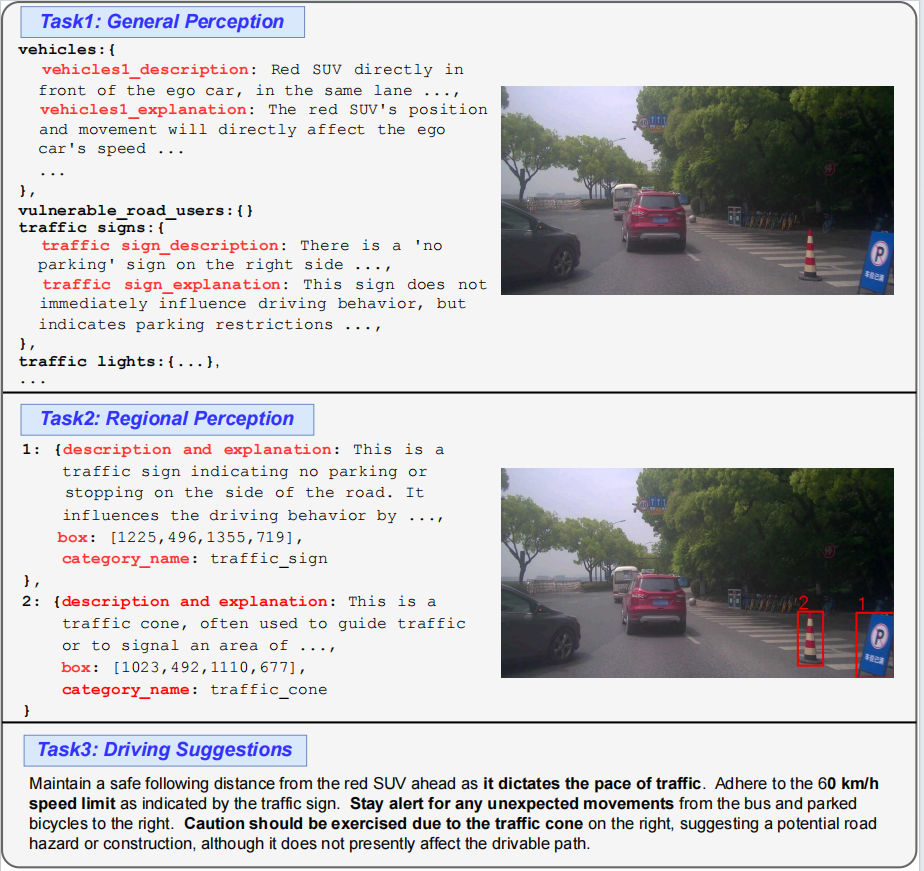
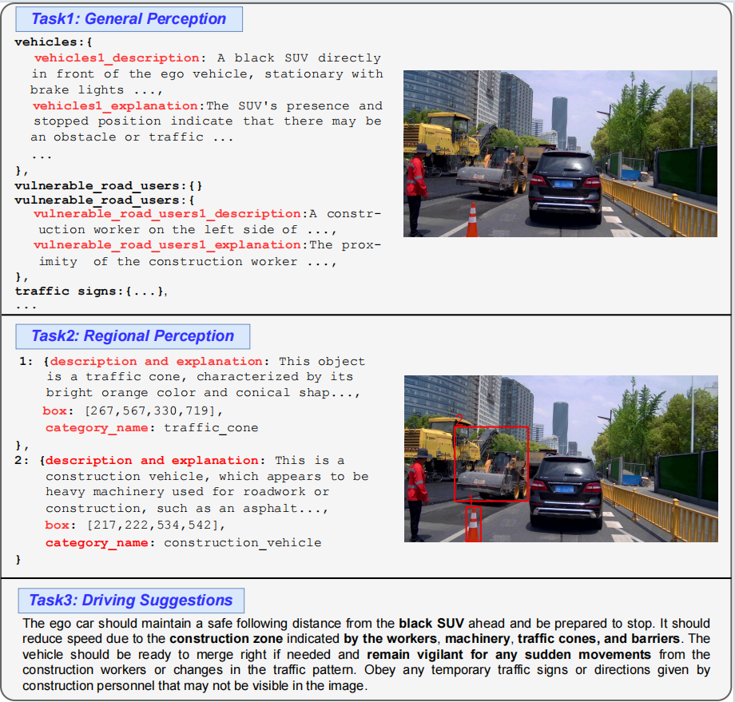

Data Samples of CODA-LM



We are holding W-CODA Workshop @ECCV24!
Check it out here!
Large Vision-Language Models (LVLMs), due to the remarkable visual reasoning ability to understand images and videos, have received widespread attention in the autonomous driving domain, which significantly advances the development of interpretable end-to-end autonomous driving. However, current evaluations of LVLMs primarily focus on the multi-faceted capabilities in common scenarios, lacking quantifiable and automated assessment in autonomous driving contexts, let alone severe road corner cases even state-of-the-art autonomous driving perception systems struggle to handle.
In this project, we propose CODA-LM, a novel vision-language benchmark for self-driving, which provides the first automatic and quantitative evaluation of LVLMs for interpretable autonomous driving including general perception, regional perception, and driving suggestions. CODA-LM utilizes structured texts to describe the road images, exploiting powerful text-only large language models (LLMs) without image inputs to assess the capabilities of LVLMs in autonomous driving scenarios, revealing stronger alignment with human preferences than LVLM judges. Experiments demonstrate that even the closed-sourced commercial LVLMs like GPT-4V cannot deal with road corner cases well, suggesting that we are still far from a strong LVLM-powered intelligent driving agent, and we hope our CODA-LM can become the catalyst to promote future development.